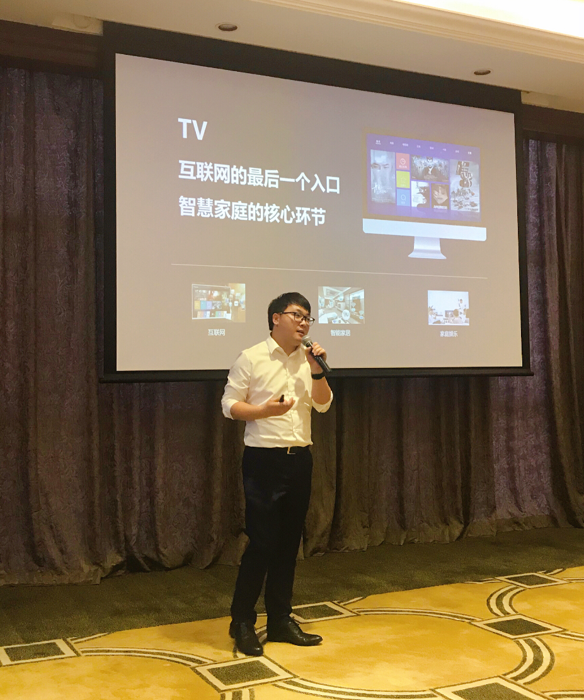
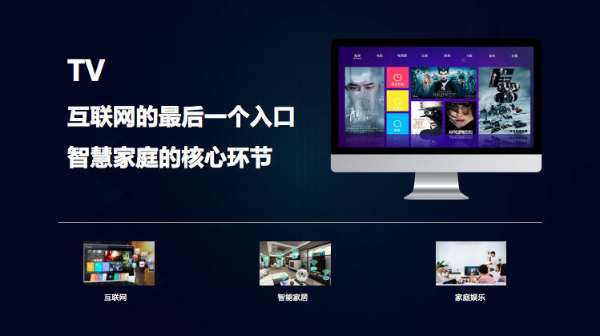
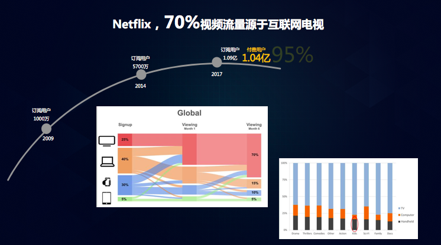
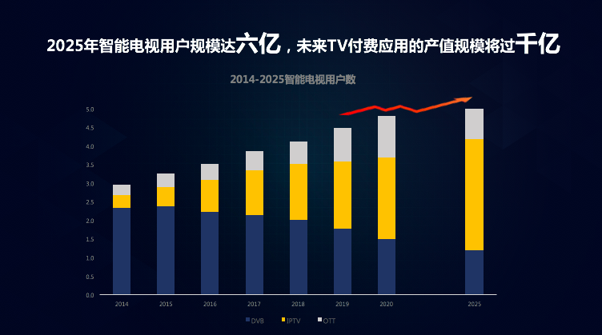
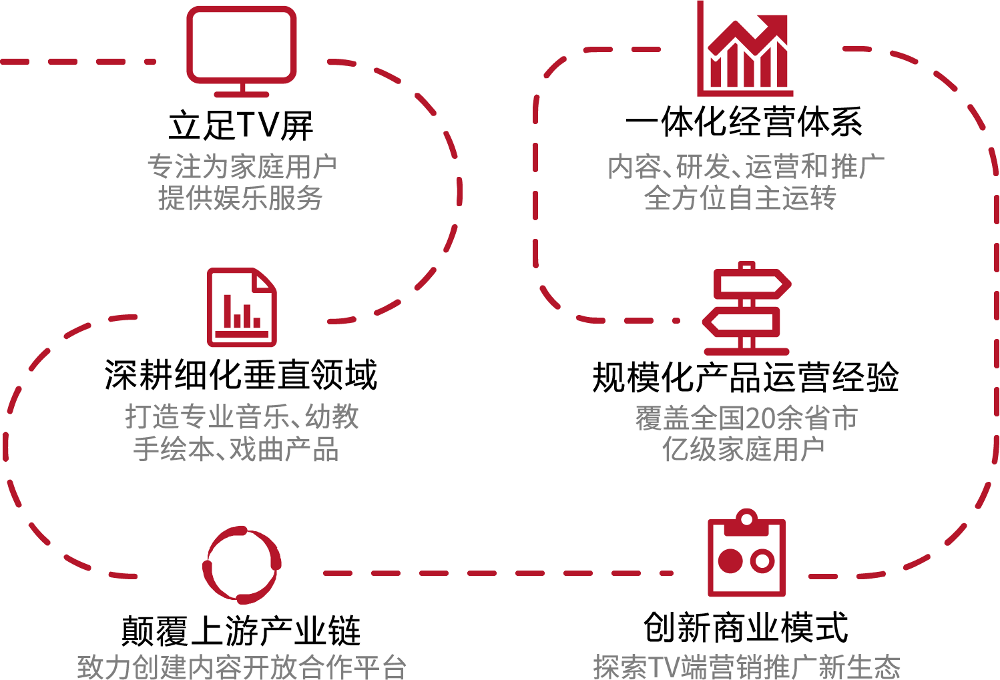

应招商证券策略投资会邀请，广州道然信息科技有限公司CEO李坤坤作为智能电视产业、互联网及通讯行业的资深专家亲临现场，深入分析了整体电视端的市场格局及发展潜力，解剖了TV付费应用的各模块的现状及发展趋势，在会议上提出了极具指导意义的TV应用投策策略。
以下为李坤坤先生在投资策略会现场提出的关于电视应用的投资策略观点，干货满满，快来一睹为快。

智能电视是未来智慧家庭的核心环节，市场产值规模将达千亿级别。
近几年来，TV产业跨入了一个行业市场化变革的阶段，无论是设备、技术的进步，还是内容、应用的数量丰富速度，从硬件、软件、内容等方面都不无体现了整个产业正在进行着翻天覆地的变革，特别是智能电视的快速发展，打破了此前政策管控下投资人视野未能触及的状况，吸引了不少资金的目光，资本动作不断，给产业的发展带来了新鲜的血液和活力。
智慧家庭是一个广受资本关注的投资概念，而目前最受追捧的智能家居产品--智能音箱产品市场表现差强人意，这跟智能音箱本身的交互形态存在较大弊端不无关系。而智能电视具备智能音箱的所有功能，同时，智能电视的可视化交互形式更适合未来智能家居的使用场景和用户需求。电视屏毫无疑问将成为智慧家庭的关键环节，是家庭娱乐的核心组成。
在目前智能设备中，无论是手机端、平板端，抑或是电脑端，都带有非常强的个人属性和私密性，适合一对一的娱乐方式。而电视机的用户场景跟其他的智能设备是迥然不同的，家庭式的、开放式的、互动式的体验方式背后蕴意着家庭娱乐方向。以电视屏为代表，将是未来整个家庭娱乐的发展方向。

Netflix作为国内一线视频产品的学习对象，它的发展对于TV端产业的发展预估具有很强的预示作用。截止到2017年，Netflix公司的订阅用户达到了一个亿的量级，其中70%的用户来源于电视大屏，超过了国内爱奇艺、腾讯、优酷三大巨头视频企业的平均用户水平，这是国内与欧美市场具有极大差异的现象。与国内市场占比不同的是，电视大屏对于Netflix的发展起到了至关重要的作用，这表明了电视屏的巨大市场潜力，是国内的资本需要持续关注和注意的领域。

回归国内整体的智能电视用户市场规模发展趋势，IPTV及OTT的用户将持续放大，DVB用户将有所缩减，预测在2025年至2026年前后中国的智能电视用户规模将达到一个相对稳定的峰值，五到六亿的用户规模水平，可预期未来TV付费应用的产值规模将过千亿。

大影视板块：整体良性发展，目前处于内容争夺战，未来发展格局不明朗
目前电视端的大影视板出现愈演愈烈的情况，爱奇艺、优酷、腾讯、PPTV、搜狐等互联网影视平台企业在电视端影视板块深刻布局，捷成世纪、皇氏集团、芒果tv、百事通等电视行业出身的企业分别占据各地市场。
整体影视板块的所有应用基本处于内容与用户双重搏杀的过程当中,各应用的盈利模式极其相似。内容都是第三方采购加上投资制作的模式来组成，同时通过典型的与各个渠道的合纵联合的方式来赢得用户流量。
在短期内看来，由于各地广电、运营商扶持，各影视企业可以在短期内取得高流量、高盈利，得到一定程度的发展。但从长期来看，互联网企业在资本运作更成熟，市场化效率高，同样的资金可以取得更高的市场效应，同时多终端、多生态可以分化成本，因此互联网企业优势更长久。初创型公司已经错过了大影视板块的最佳参赛时机。
音乐板块：专注初创公司,具有以小博大可能性
音乐是目前电视应用数量相对比较多的板块，整体市场发展从初期的混乱状态逐步出现成熟的倾向。在音乐板块的发展过程中，得到了各路资本的重视，老牌TV应用譬如百灵k歌、天籁k歌、彩虹音乐，运营商系应用譬如爱音乐、沃音乐、咪咕音乐，互联网音乐巨头譬如QQ音乐、虾米音乐，新生TV音乐应用譬如乐享音乐、小狮音乐、雷石KTV等多家企业纷纷涌现。
互联网音乐巨头在TV端布局策略尚不明朗,但版权整合优势明显。初创公司要想在音乐市场格局中取得突围发展，就必须专注于产品本身，提高产品的创新竞争力及用户体验，聚合渠道吸引用户，则具备以小博大的可能性。
阅读板块：新生市场，盈利预期可观，处于资本投入佳期
目前电视端的阅读板块尚没有成规模的应用出现，整体处于新生市场状态。对比与移动阅读应用，市面上的阅读应用整体功能相对初级，功能简单，相似性强，整体内容资源质量较低，数量能够超过1000部的少之又少。
作为新生市场，阅读板块的市场预期非常可观，预期2019年整体阅读板块将达3000万的信息费，后续每年可翻倍增长，到2022年可达3亿信息费的市场规模。
戏曲板块：政策支持，竞争选手少，市场前景广阔
从2015年以来，国家各级文化主管部门通过常态化的政策，尤其十八大以来对于戏曲的政策扶持得到了极大的推进，重新提升了戏曲在文化建设中地位，对于夯实戏曲生态环境给与了充分的保障，这也给电视端戏曲板块应用的发展提供了利好的条件。
着眼于戏曲发展的现状，戏曲行业的后续发展需要紧紧围绕着市场、人才及资本，通过成熟的产品形态，构建可盈利的商业模式，反哺上游产业链，形成市场、资本、人才互相驱动的良性三角关系，承担起企业的社会责任，促进中国传统文化的更好发展。
目前在电视端的戏曲应用竞争选手少，CIBN互联网电视的戏曲产品《东方大剧院》、广州道然打造的具备区域性个性化推荐的戏曲产品《梨园行》是目前戏曲板块的代表性应用。戏曲板块存在广阔的市场需求，营收能力强，发展前景良好，同样也是资本不可忽视的领域。
由于时间限制，现场未能对其他的行业板块进行详细的一一剖析，对于幼教及游戏板块，李坤坤先生给出了结论性的投资策略建议。
幼教板块：市场空间巨大，但由于门槛很低，产品数量多，内容堆叠混乱，缺乏综合性选手，未来发展方向不明，建议资本持观望态度。
游戏板块：大盘持续扩大，目前处于劣币驱逐良币的过程。未来可长期培育，值得长期观望投资。
在30分钟的演讲过程中，现场气氛热烈，引起了众多专业投资者兴趣和关注，互动频繁。随着TV行业与互联网的不断融合，传统电视行业的竞争格局已被打破，迎来了更多的入局者和资金目光，现在仅仅只是开始， TV端各个付费应用板块的未来究竟如何，让我们拭目以待!
广州道然-打造家庭娱乐新体验
广州道然信息科技有限公司成立于2014年9月。公司坚持以电视屏为核心，专注于为用户提供优秀家庭娱乐产品，致力于构建从产品研发、运营推广、内容产业等全方位一体化经营体系，涉足IPTV、DTV、OTT、移动互联网、智能家居等领域，立志成为行业领军企业的公司。现公司业务已覆盖全国20多个省市/直辖市，在全国十几个城市设有分公司或办事处。
道然旗下拥有“乐享音乐”、“小狮音乐”、“萌宝星空”、“哆啦城堡”、“梨园行”、“萌宝绘本屋”等多款产品。
